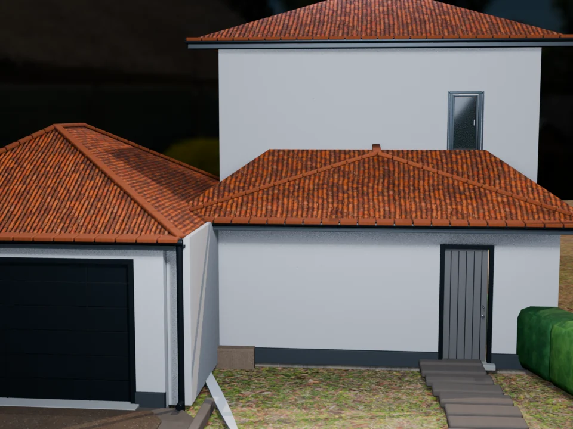
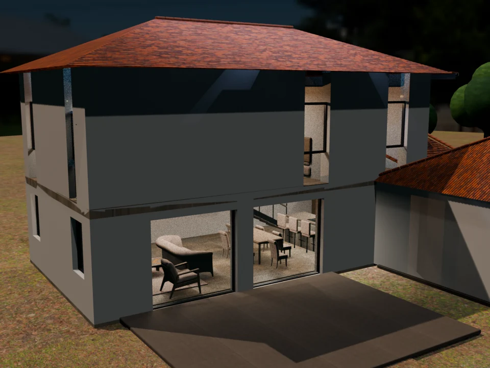

Version V18 · V18-WEB-REALISM-1
Maison neuve de Chamagnieu
La vraie visite Web charge le GLB V18 amélioré, ses matériaux PBR compacts, son éclairage R2 et sa végétation optimisée. Les images Blender ci-dessous restent des références clairement séparées des captures live.
Vérité live : ouvrez « Présentation 3D live » ou « Commencer dehors » ; le badge SOURCE = LIVE WEB VIEWER identifie le vrai rendu navigateur.

Façade et toiture : rendu de référence, distinct du viewer Web.

Jardin et façade arrière : rendu de référence, distinct du viewer Web.
État réaliste de la V18
- Configuration centrale :
shared/project-config.json. - Modèle live :
Chamagnieu_V18_WEB_REALISM_UPGRADED.glb, géométrie inchangée mais matières reconstruites : six matériaux dédiés, 52 WebP PBR générées, onze images remplacées, dix-huit textures inutilisées retirées et trente-sept réaffectations de primitives. - 78 images WebP embarquées, 95 bindings PBR valides et aucun octet image orphelin ; aucune texture externe silencieusement absente.
- Éclairage Web corrigé par ciel procédural PMREM, tone mapping ACES, lumière key/fill/rim et ombres douces desktop.
- Quatre arbres et dix-huit segments de haie densifiés sont installés au runtime avec repli low-poly sur appareil contraint.
- La visite commence à l’extérieur et permet d’entrer dans la maison.